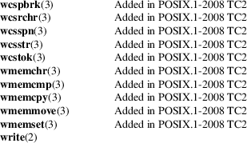

signal-safety − async-signal-safe functions
An async-signal-safe function is one that can be safely called from within a signal handler. Many functions are not async-signal-safe. In particular, nonreentrant functions are generally unsafe to call from a signal handler.
The kinds of issues that render a function unsafe can be quickly understood when one considers the implementation of the stdio library, all of whose functions are not async-signal-safe.
When performing buffered I/O on a file, the stdio functions must maintain a statically allocated data buffer along with associated counters and indexes (or pointers) that record the amount of data and the current position in the buffer. Suppose that the main program is in the middle of a call to a stdio function such as printf(3) where the buffer and associated variables have been partially updated. If, at that moment, the program is interrupted by a signal handler that also calls printf(3), then the second call to printf(3) will operate on inconsistent data, with unpredictable results.
To avoid problems with unsafe functions, there are two possible choices:
|
(a) |
Ensure that (1) the signal handler calls only async-signal-safe functions, and (2) the signal handler itself is reentrant with respect to global variables in the main program. | ||
|
(b) |
Block signal delivery in the main program when calling functions that are unsafe or operating on global data that is also accessed by the signal handler. |
Generally, the second choice is difficult in programs of any complexity, so the first choice is taken.
POSIX.1 specifies a set of functions that an implementation must make async-signal-safe. (An implementation may provide safe implementations of additional functions, but this is not required by the standard and other implementations may not provide the same guarantees.)
In general, a function is async-signal-safe either because it is reentrant or because it is atomic with respect to signals (i.e., its execution can’t be interrupted by a signal handler).
The set of functions required to be async-signal-safe by POSIX.1 is shown in the following table. The functions not otherwise noted were required to be async-signal-safe in POSIX.1-2001; the table details changes in the subsequent standards.

Notes:
|
• |
POSIX.1-2001 and POSIX.1-2001 TC2 required the functions fpathconf(3), pathconf(3), and sysconf(3) to be async-signal-safe, but this requirement was removed in POSIX.1-2008. | ||
|
• |
If a signal handler interrupts the execution of an unsafe function, and the handler terminates via a call to longjmp(3) or siglongjmp(3) and the program subsequently calls an unsafe function, then the behavior of the program is undefined. | ||
|
• |
POSIX.1-2001 TC1 clarified that if an application calls fork(2) from a signal handler and any of the fork handlers registered by pthread_atfork(3) calls a function that is not async-signal-safe, the behavior is undefined. A future revision of the standard is likely to remove fork(2) from the list of async-signal-safe functions. | ||
|
• |
Asynchronous signal handlers that call functions which are cancelation points and nest over regions of deferred cancelation may trigger cancelation whose behavior is as if asynchronous cancelation had occurred and may cause application state to become inconsistent. |
errno
Fetching and setting the value of errno is
async-signal-safe provided that the signal handler saves
errno on entry and restores its value before
returning.
Deviations
in the GNU C library
The following known deviations from the standard occur in
the GNU C library:
|
• |
Before glibc 2.24, execl(3) and execle(3) employed realloc(3) internally and were consequently not async-signal-safe. This was fixed in glibc 2.24. | ||
|
• |
The glibc implementation of aio_suspend(3) is not async-signal-safe because it uses pthread_mutex_lock(3) internally. |
sigaction(2), signal(7), standards(7)